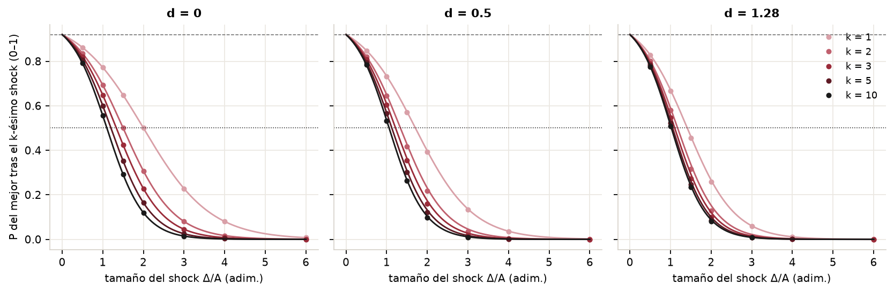
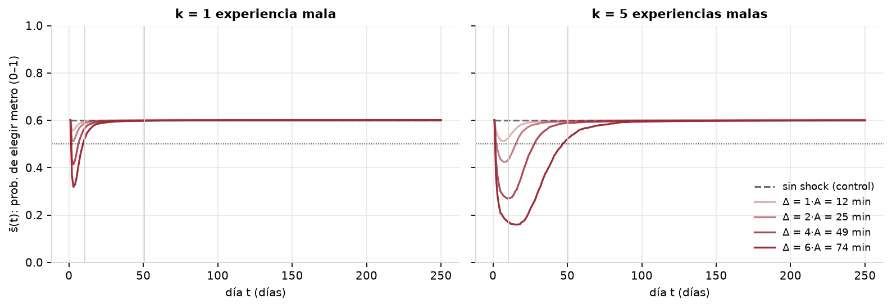
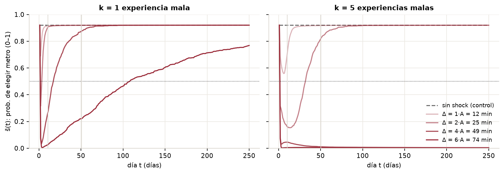
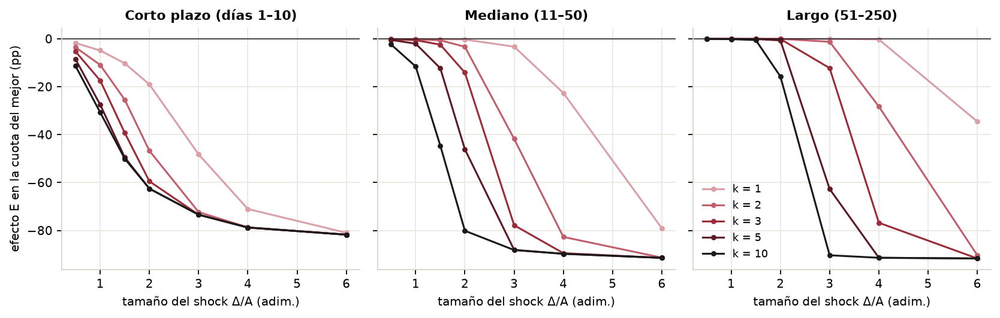
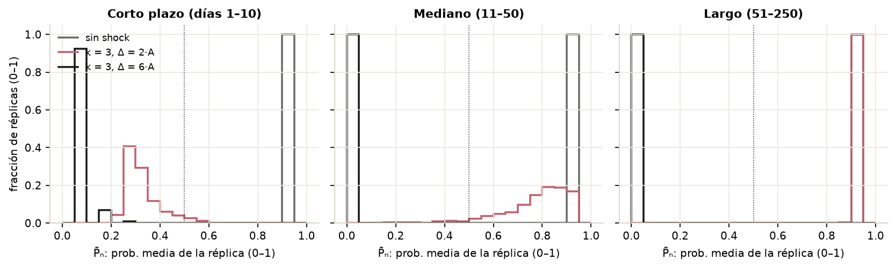

Cuánto hace falta para que una mala racha cambie la conducta, y cuándo el efecto se borra en vez de quedarse para siempre.
E1 pregunta qué le hace a una persona una mala racha temprana: unas pocas experiencias muy malas en el modo que le conviene, justo al principio, cuando todavía no tiene historia que las promedie. Cuatro preguntas, con la respuesta corta al lado.
P1. ¿Qué tan mala, o cuántas veces, tiene que ser la experiencia para cambiar la conducta? Hay un umbral exacto y se puede escribir: el shock crítico que deja la ventaja percibida en cero. Para el caso de referencia (C1) va de 12,6 a 17,4 minutos según cuántas veces ocurra. Y es el mismo en las dos escalas: el umbral es una propiedad de la memoria, no del logit.
P2. ¿El efecto se borra o se queda? Depende de si cruza una segunda frontera, y ahí las dos escalas no se parecen en nada. Con los β del simulador todo se recupera: el peor efecto de largo plazo de las 105 combinaciones es −19,7. Con los β de la literatura hay una región donde no se recupera nunca: el peor llega a −91,7 y la persona sigue ahí el día 250.
P3. ¿La fórmula predice lo que hace la simulación? Sí, y es la verificación que sostiene todo lo demás: la probabilidad analítica justo después del -ésimo shock reproduce la simulada en las dos escalas (§5.4).
P4. ¿Cambia la escala la respuesta? No cambia el umbral, cambia la consecuencia de cruzarlo — y eso basta para que aparezca un fenómeno que con = 1 no existía. Con = 5 y = 6, la cuota del modo mejor queda en 0,3 % y no se mueve más.
Una persona elige cada día entre dos modos —el mejor y el peor de su celda— durante 250 días, 500 réplicas independientes, semilla 42. Sin variabilidad: los tiempos son los de referencia, salvo por el tratamiento. Las primeras veces que elige el modo mejor, su experiencia sale minutos peor de lo que realmente es. Después, todo vuelve a la normalidad.
Esa definición tiene una consecuencia que importa: los shocks se entregan cuando la persona elige el modo, no en días fijos. Si abandona antes de acumular las experiencias, nunca las recibe. Volvemos a esto en §5.5, porque deja de ser un detalle de implementación y pasa a ser parte del resultado.
El diseño cruza cuatro ejes:
Cada combinación se compara contra un control sin shocks, idéntico en todo lo demás. Y todo se corre dos veces, en las dos escalas del logit de la §4.
Tabla 1Los tres casos
| caso | estrato | km | mejor | A (min) | P* (simulador) | P* (β × 6,0) |
|---|---|---|---|---|---|---|
| C1 | 3 | 9,8 | Metro | 12,3 | 0,6006 | 0,9198 |
| C2 | 2 | 3,5 | Auto | 33,4 | 0,7511 | 0,9987 |
| C3 | 1 | 1,1 | Auto | 52,7 | 0,8512 | 1,0000 |
La ventaja A no depende de la escala; la probabilidad verdadera P* sí. El caso de referencia es C1, el mismo del informe de E2. Ojo: el tamaño del shock se define como Δ = r·A, así que un caso con más ventaja recibe un shock absoluto más grande — por eso acá el patrón entre casos es el contrario al de E2 (§5.6).
El instance-based learning (IBL) dice que el tiempo que una persona cree que toma el modo es un promedio ponderado de los tiempos que efectivamente vivió en ese modo, con los días recientes pesando más:
vale 1 si esa persona eligió el día y 0
si no. Esa indicatriz es todo el problema de E1: los días en que no elegiste un
modo no entran en la creencia sobre ese modo, así que una mala racha no se
promedia si dejas de usarlo. El código está en ibl.py:30 y
ibl.py:48.
La persona arranca con un prior: una instancia en con el tiempo de referencia . Sabe cuánto tardan los modos, pero esa creencia inicial pesa como una sola experiencia y es lo que las malas rachas van a desplazar.
es la ventaja verdadera del modo mejor en minutos, y la probabilidad de alguien que conoce los tiempos: el control contra el cual se mide el daño.
Si la persona usa el modo mejor los días 1… y recibe el shock cada vez, al decidir el día esas experiencias tienen antigüedad 1… y el prior tiene antigüedad . El peso conjunto de la mala racha frente al prior es
que con da sin importar cuándo ocurrieron. La ventaja percibida queda entonces , y el shock que la deja exactamente en cero es
Éste es el número que contesta P1. Nótese que está escrito sólo con —minutos— y —memoria—: no aparece la escala del logit. La probabilidad justo después del -ésimo shock sí la lleva:
Multiplicar toda la utilidad por (la reescala de la §4) multiplica
y por igual, así que el argumento del logit se
multiplica por : el cruce por ½ no se mueve —es
— pero la curva se vuelve mucho más abrupta. El código está
en experimentos.py:157, experimentos.py:168
y experimentos.py:173.
El efecto en una ventana de días es la diferencia de cuota contra el control:
y la vida media es cuántos días pasan desde el punto más bajo hasta
recuperar la mitad de la brecha (experimentos.py:250). Si no se
recupera dentro de los 250 días, se anota «—», y eso es el resultado, no un
dato faltante.
Todo lo que sigue está calculado con los del simulador. Esta sección explica qué son, por qué la literatura de elección repetida sugiere valores bastante mayores, y por qué eso se reporta como sensibilidad y no como corrección.
En un logit sólo se identifica el producto : multiplicar la escala
por un número y dividir los coeficientes por el mismo deja exactamente las
mismas probabilidades. Por eso el logit de transporte del simulador fija
= 1 —titirilquen_core/demand/choice.py:19
calcula a secas, sin ninguna escala— y son los los que la
absorben.
La consecuencia importa: no es una perilla disponible, ya está consumida. Los valen lo que valen porque, con = 1, reproducen una partición modal observada. (El del uso de suelo es otra cosa: ahí sí es un parámetro de escenario, porque fija cuánto pesa el ruido de localizarse frente a una accesibilidad que ya trae su propia escala.)
Guevara, Tang y Gao (2018) estiman un IBL con los datos de laboratorio de ruta de Ben-Elia y Shiftan (2010) —que es casi exactamente el experimento que estos informes simulan— y obtienen:
Tabla 2Guevara, Tang y Gao (2018), tabla 4, dataset completo
| parámetro | d | TIMEF | TIMES | LRISK | FRISKY | CWA |
|---|---|---|---|---|---|---|
| estimación | 1,28 | −0,198 | −0,086 | 0,864 | 0,405 | 5,71 |
| error estándar | 0,137 | 0,015 | 0,013 | 0,144 | 0,12 | 0,192 |
TIMEF multiplica el tiempo percibido de la ruta rápida (su ec. 15), no el real: es el análogo exacto de nuestro tiempo del IBL. TIMES es el de la ruta lenta — son dos coeficientes específicos de alternativa dentro del mismo modelo, no un rango. De acá sale también el d = 1,28 que usamos de referencia, que el paper subraya como estimado y no fijado.
Su coeficiente de tiempo es −0,198 útiles/min contra los −0,0331 del simulador:
Tomar ese número no es «elegir otra escala». Como ya está normalizado, equivale a afirmar que los de transporte del simulador son seis veces chicos — es decir, que la elección modal del modelo es mucho más ruidosa de lo que sería en la realidad. Y eso contradice su calibración, que es lo que fija esos .
Hay además una razón de fondo: la escala del logit no es transferible entre contextos de elección. El dato de Guevara viene de elegir entre dos rutas que difieren sólo en tiempo, en laboratorio, con información en pantalla. Elegir entre auto, metro, bici y caminata en una ciudad real es una decisión con mucha más heterogeneidad no observada — y esa heterogeneidad es precisamente lo que un chico representa. Su valor no es «el verdadero» que el simulador debería copiar.
Por eso los resultados van con los del simulador y las tablas traen una columna « × 6,0» como sensibilidad de calibración: dice cuánto crecería cada efecto si la elección modal fuera tan determinista como sugiere el laboratorio. Cuando un efecto se vea chico, esa columna contesta la pregunta obligada — ¿chico de verdad, o chico porque el modelo elige con demasiado ruido?
Tabla 3El umbral crítico — caso C1
| k | d = 0,00 | d = 0,50 | d = 1,28 | |||
|---|---|---|---|---|---|---|
| W_k | Δ* (min) | W_k | Δ* (min) | W_k | Δ* (min) | |
| 1 | 0,5000 | 24,6 | 0,5858 | 21,0 | 0,7083 | 17,4 |
| 2 | 0,6667 | 18,5 | 0,7473 | 16,5 | 0,8521 | 14,5 |
| 3 | 0,7500 | 16,4 | 0,8204 | 15,0 | 0,9072 | 13,6 |
| 5 | 0,8333 | 14,8 | 0,8878 | 13,9 | 0,9509 | 13,0 |
| 10 | 0,9091 | 13,6 | 0,9434 | 13,1 | 0,9804 | 12,6 |
W_k es el peso de la mala racha frente al prior, ec. (6); Δ* = A/W_k el shock que deja la ventaja percibida en cero, ec. (7). Más experiencias malas bajan el umbral, pero con rendimientos decrecientes: de 17,4 a 12,6 min al pasar de 1 a 10. Más memoria de lo reciente (d alto) también lo baja. Estos números son idénticos en las dos escalas (OJO: difieren): el umbral es una propiedad de la memoria, no del logit.

Tabla 4Alrededor del umbral — C1, k = 3, d = 1,28
| r | Δ (min) | P tras el shock | efecto corto plazo (pp) | efecto largo plazo (pp) | vida media (días) | ||||
|---|---|---|---|---|---|---|---|---|---|
| simulador | β × 6,0 | simulador | β × 6,0 | simulador | β × 6,0 | simulador | β × 6,0 | ||
| 0,5 | 6,2 | 0,555 | 0,791 | −2,6 | −5,3 | 0,0 | 0,0 | 5 | 2 |
| 1,0 | 12,3 | 0,509 | 0,556 | −5,3 | −17,4 | 0,0 | 0,0 | 5 | 3 |
| 1,5 | 18,5 | 0,463 | 0,293 | −8,2 | −39,3 | −0,1 | −0,1 | 6 | 6 |
| 2,0 | 24,6 | 0,418 | 0,121 | −11,3 | −59,5 | −0,1 | −0,1 | 7 | 11 |
| 3,0 | 37,0 | 0,331 | 0,015 | −17,7 | −73,4 | −0,1 | −12,2 | 8 | 52 |
| 4,0 | 49,3 | 0,255 | 0,002 | −23,7 | −78,8 | −0,2 | −76,8 | 9 | — |
| 6,0 | 73,9 | 0,140 | 0,000 | −33,2 | −81,8 | −0,3 | −91,7 | 13 | — |
El umbral de este caso es Δ* = 13,6 min, entre r = 1,0 y 1,5. Con los β del simulador cruzarlo casi no se nota: el efecto de largo plazo nunca pasa de −0,3 y todo se recupera en días. Con los β de la literatura (negrita) la misma fila cambia de naturaleza: a partir de r = 3 el efecto se queda, y desde r = 4 ya no hay recuperación dentro del horizonte («—»).
Las dos figuras siguientes son el mismo gráfico en las dos escalas, y son el resultado central de E1.


Tabla 5Mapa de la trampa — efecto de largo plazo (pp), C1, d = 1,28, sensibilidad de calibración
| k \ r | 0,5 | 1,0 | 1,5 | 2,0 | 3,0 | 4,0 | 6,0 |
|---|---|---|---|---|---|---|---|
| 1 | 0,0 | 0,0 | 0,0 | 0,0 | 0,0 | −0,3 | −34,6 |
| 2 | 0,0 | 0,0 | 0,0 | −0,1 | −1,2 | −28,3 | −90,4 |
| 3 | 0,0 | 0,0 | −0,1 | −0,1 | −12,2 | −76,8 | −91,7 |
| 5 | 0,0 | −0,1 | −0,1 | −0,7 | −62,7 | −91,4 | −91,7 |
| 10 | −0,1 | −0,2 | −0,5 | −15,7 | −90,4 | −91,4 | −91,7 |
Días 51–250 contra el control. Hay una frontera nítida: arriba y a la derecha de ella el daño es permanente y se estabiliza cerca de −91,7, que es el abandono casi total del modo mejor. Abajo y a la izquierda, la recuperación es completa. La misma tabla con los β del simulador no tiene ninguna celda bajo −7,3: ahí el daño permanente, sencillamente, no existe.

Tabla 6Verificación de la ec. (8) — C1, d = 1,28
| k | r | simulador | β × 6,0 | ||
|---|---|---|---|---|---|
| analítica | simulada | analítica | simulada | ||
| 1 | 1,0 | 0,5297 | 0,5246 | 0,6707 | 0,6665 |
| 1 | 3,0 | 0,3873 | 0,3729 | 0,0604 | 0,0581 |
| 3 | 1,0 | 0,5095 | 0,5067 | 0,5564 | 0,5476 |
| 3 | 3,0 | 0,3314 | 0,3216 | 0,0148 | 0,0086 |
| 10 | 1,0 | 0,5020 | 0,5012 | 0,5120 | 0,5082 |
La fórmula predice la simulación en las dos escalas. Sobre todas las celdas de los tres casos y los tres d en que al menos la mitad de las réplicas llega a las k experiencias, la desviación máxima es 0,0242. Las celdas donde no llega —ver tabla 7— quedan fuera porque ahí la cantidad simulada se promedia sobre muy pocas réplicas o sobre ninguna.
Tabla 7Autotruncamiento — % de réplicas que llega a recibir las k experiencias (C1, d = 1,28, sensibilidad de calibración)
| k \ r | 0,5 | 1,0 | 1,5 | 2,0 | 3,0 | 4,0 | 6,0 |
|---|---|---|---|---|---|---|---|
| 1 | 100,0 | 100,0 | 100,0 | 100,0 | 100,0 | 100,0 | 100,0 |
| 2 | 100,0 | 100,0 | 100,0 | 100,0 | 100,0 | 100,0 | 83,4 |
| 3 | 100,0 | 100,0 | 100,0 | 100,0 | 100,0 | 92,6 | 2,8 |
| 5 | 100,0 | 100,0 | 100,0 | 100,0 | 94,0 | 4,6 | 0,0 |
| 10 | 100,0 | 100,0 | 100,0 | 100,0 | 1,6 | 0,0 | 0,0 |
Los shocks se entregan cuando la persona elige el modo, así que abandonar antes de tiempo la protege de recibir el resto. Con k = 10 y r = 3 sólo el 1,6 % llega. En toda la grilla hay 68 celdas de 315 donde ninguna réplica llega, contra 6 con los β del simulador. No es un defecto del diseño: es el mecanismo. Pero sí obliga a leer las celdas extremas como «k intentos de shock», no «k shocks recibidos».

Tabla 8Los tres casos — k = 3, r = 2,0, d = 1,28
| caso | A (min) | Δ (min) | P* (Guevara) | P_post (Guevara) | largo plazo (simulador) | largo plazo (β × 6,0) |
|---|---|---|---|---|---|---|
| C1 | 12,3 | 24,6 | 0,9198 | 0,1206 | −0,1 | −0,1 |
| C2 | 33,4 | 66,7 | 0,9987 | 0,0046 | −0,1 | −19,9 |
| C3 | 52,7 | 105,4 | 1,0000 | 0,0002 | −0,1 | −89,4 |
Acá el caso más dominante es el más dañado, al revés que en E2. La razón está en la columna Δ: como el shock se define en múltiplos de la ventaja, C3 recibe 105 min de penalización contra 25 de C1. Eso hunde su P_post a 0,00020: deja de muestrear el modo y no tiene cómo enterarse de que ya no es malo.
E1 tiene dos fronteras y conviene no confundirlas. La primera es : el shock que vuelca la decisión hoy. Es exacta, se escribe con la ec. (7) y no depende de la escala del logit. La segunda no tiene fórmula cerrada acá y es la que decide si el daño persiste: hace falta que quede tan bajo que la persona prácticamente deje de muestrear el modo, porque sólo muestreándolo puede enterarse de que ya volvió a ser bueno.
La ec. (2) es la que conecta ambas: si queda en cero día tras día, la creencia se congela en el peor momento. El aprendizaje no es simétrico — castiga rápido y perdona sólo si le das la oportunidad.
Con los β del simulador, el más bajo de toda la grilla del caso de referencia es 0,120. Eso es un 12 % de probabilidad de volver a probar el modo cada día: en una semana la persona vuelve casi seguro, recibe información nueva y se recupera. Por eso todas las curvas de la figura 2 vuelven al control.
Con los β de la literatura ese mismo se va a órdenes de 0,00001. Ahí la persona no vuelve a probar nunca, y lo que era una caída transitoria se vuelve permanente. No es que la escala amplifique el efecto: es que crea el fenómeno, porque la persistencia depende de un umbral de muestreo que con = 1 nunca se cruzaba.
Dicho de otro modo: la conclusión del informe publicado —«el efecto de una mala racha se borra»— no era un resultado del modelo IBL, sino del valor de .
La tabla 7 parece un problema de diseño y es justamente lo contrario. Que sólo el 1,6 % de las réplicas llegue a recibir 10 experiencias malas significa que la mayoría ya se había ido. Es el mismo fenómeno que E2 llama hot stove, visto desde el otro lado: la persona se protege de más información mala, y al hacerlo se protege también de la información buena que la haría volver.
La consecuencia práctica es de lectura: en las celdas extremas, es «intentos de shock», no «shocks recibidos». Un diseño que quisiera entregar shocks de verdad tendría que forzar la exposición, y eso ya sería otra pregunta de investigación.
papers/2018 Guevara Tang Gao TRB.pdf: la tabla 2 de arriba es su
tabla 4, dataset completo.cd sandbox/ibl-dia-a-dia
uv sync --extra dev --reinstall-package titirilquen-core # el núcleo del repo, no uno cacheado
uv run --extra dev pytest # las fórmulas (7)–(9)
uv run python experimentos.py # ~5 min → salida/experimentos.json
uv run python experimentos.py --guevara # ~5 min → salida/experimentos-guevara.json
uv run python figuras_experimentos.py
uv run python figuras_experimentos.py --guevara
uv run python informe_e1.py
node ../../tools/renderiza_ecuaciones.js